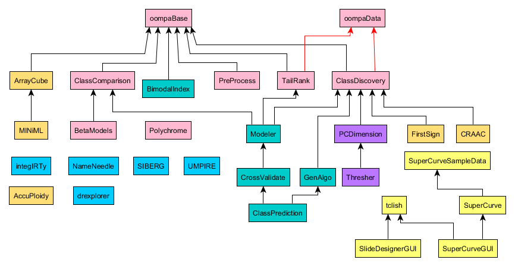

OOMPA
Object-Oriented Microarray and Proteomics Analysis
OOMPA is a suite of R packages for the analysis of gene expression (RNA), proteomics profiling , and other high throughput molecular biology data. OOMPA uses S4 classes to construct object-oriented tools with a consistent user interface.
All higher level analysis tools in OOMPA work with the expressionSet classes defined in BioConductor. The lower level processing tools offer an alternative to parts of BioConductor, but can also be used to enhance the existing BioConductor packages.
Package Overview

This figure shows the dependency relationships between the OOMPA
packages. Black arrows indicate dependendencies reflected by
Depends or Imports entries in the package
DESCRIPTION file. Red arrows indicate a weaker relationship, reflected
by a Suggests entry in the packager DESCRFIPTION file.
Installation
The simplest way to install OOMPA packages is to start your local version of R and use the following commands:
source("http://silicovore.com/OOMPA/oompaLite.R")
oompaLite()
The oompaLite command installs a small set of "base" OOMPA
packages. To get a slightly larger set of (default) packages, you can
execute the command:
oompainstall()If you want to get absolutely everything (which may include some experimental packages with very little in the way of documentation), use the command:
oompainstall(groupName="all")Alternatively, if you want more control over which packages get installed, execute the following command and select from the resulting list:
install.packages(repos="http://silicovore.com/OOMPA/")
Support
When we moved the source code repository to R-Forge, we set up new discussion forums and other facilities for OOMPA users to obtain help. These include:
Source Code
The source packages for OOMPA are available from R-Forge. To simplify package maintenance, the packages are separated into multiple projects. The projects are color-coded in the figure above and in the table below.
| Project Name | Package URL |
|---|---|
| OOMPA | http://r-forge.r-project.org/projects/oompa |
| Class Prediction | http://r-forge.r-project.org/projects/classpred |
| SuperCurve | http://r-forge.r-project.org/projects/supercurve |
| NameNeedle | http://r-forge.r-project.org/projects/nameneedle |
| SIBER | http://r-forge.r-project.org/projects/siber |
| integIRTy | http://r-forge.r-project.org/projects/integirty |
| UMPIRE | http://r-forge.r-project.org/projects/umpire |
| Thresher | http://r-forge.r-project.org/projects/thresher |
| ArrayCube | Under Development |
| FirstSign | Under Development |
| CRAAC | Under Development |
| AccuPloidy | Under Development |
| drexplorer | Under Development |
|
|